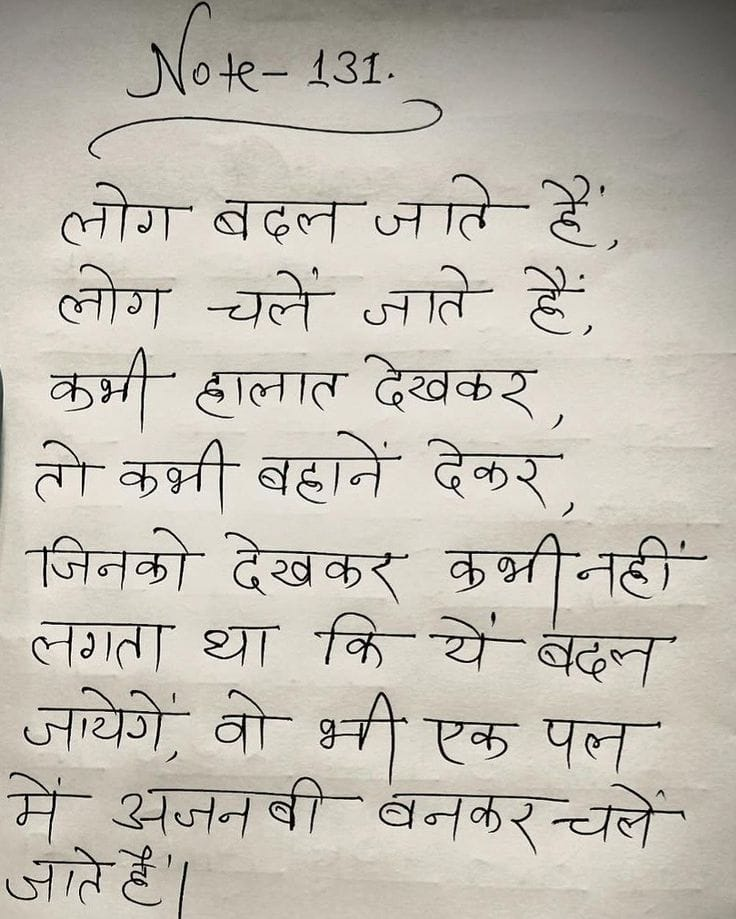

File: hin_sample_08.jpg

लोग बदल जाते हैं, लोग चले आते हैं, कभी छाला देखकर, ने कभी बढ़ने देखकर, जिनको देखकर कभी नहीं लगता था कि ये बदल आये जो, वो भी एक पल में अजनबी बनकर चले आते थे। *(ध्यान दिया गया है कि "छालात" विकास में एक गलती लग रही है, जिसे सही रूप में "छाला" (सीधा लोकमात्र हिंदी व्यंजन) के रूप में व्यक्त किया गया है। साथ ही, भाषा के अनुकूल अव्ययों तथा वाक्य संरचना के अनुसार उचित रूप में संपादित किया गया है।)*
Note-131. लोग बदल जाते हैं, लोग चले जाते हैं, कभी हालात देखकर, तो कभी बहाने देकर, जिनको देखकर कभी नहीं लगता था कि ये बदल जायेंगे, वो भी एक पल में अजनबी बनकर चले जाते हैं।
Note- 131. लोग बदल जाते हैं', लोग चलें जाते हैं, कभी हालात देखकर, तो कभी बहानें देकर, जिनको देखकर कभी नहीं लगता था कि ये बदल जायेंगे, वो भी एक पल में अजनबी बनकर चलें जाते है'।
हि २७७७८ ६२४ . chr deep जात Se लोग Sc Re & opt ठदालात देखकश् तो कन्नी बहाने देकर पजिनको देखकर BHT AGT लगता था fe ae STB वो- श्की एक Tey में' अजनबी- बनकरच्यलें तल ४ |
we आर AL निकट ८८ 2 TE 7 or Be se चर tt, « cee हा or . ne इज: te ae TR Ett rere 5 हा... el . : na TU eS oie se eRe, a ee 5 fo ET yeti See EA 0 पाए eae mi et eo : . 7 आज 72-77 परे ole. pes Beer BT पा ना Tee हि cos He NE SS नजर Aes ak Beste 5 we . ; cei ae lade esa BOK Fa eee 2 eat a जल eat ae wt ie ste” Da EN ९7400 054 SES ITY FON ey reo ae ५ सेट RE, pe दान mee Se Eu हछ le, ee : on a . ~ DARED ES UNS Sees ee ak SAPS SMA oe el - 700 57 ० aa ever EE DE पा ताप SEAT ng) ein Le RST ES, RS or ev ET ee et 92702. ee CS SEE CEE PSR SET Ls EN ST. Tae ties न ० पक in 7 ae अल EB EE yi oy ea कट मा UN CSUR 2220 ee Pe a ete है AA 7 कार ne 5० - TEES tee a ee TY Reais ee meets She ei ee fees TES a te aor OPES Sd SRT ors ore SOONG : - ा PR re tt ei, Te ५ पल “STEN Ee SO SS ee ED Ss TN ets One ei 27 (oS: SCENE Oe ee Sanayi aes 0) WE EEN WLS fs. RETO SF Phy “OA ER AT Ee Wal Proce 4G BECGSEE REECE TERY हस्त सिव्य (65072 [ee Raa ae ae Ne ia =) co lar SSCS (Veoh. 2 fics PNG Yo) Socieabaces > 0 en ere] (0 27 4 hel ee ६ aM Bet Nos Js ean ४ ३) Nic And Ramee’ £0 C24 7०7 mei Dee 2०. ६१. HA Rede. | OSE SNGZSO Pe SRE SEN, agate it 7500 OS ५ लक SME ca NE He pa UPD OS ye = Sie: बट अर ate Gor ope NES pearl Eo See ae “ne is WE LE = A in SS at RE Ne oo er So WEN CN ne | 7:20: ORE Mas Se "7 7० 5. fan eee eae. REE ee eer NI I ee पाए जाल Bl (74 2] Fee eee PR. een es Fea fo Perey = a a aie ae मिटा whe? OST अन्|॑>त या Oo ES लो, x I Been ft! Sor. eee ARNE ES जा i 2 a PPR. ok =) A a ee a Tei ER ES SAP AY RTI REE ee 5 Se ee a cn ep ree 2५ Se Ek नर पु 2 PIT wae TT PEE CER a EE > a ८: Tae ०:25 igh COMET ae pete Pat ero tue >" aa Tae 5 2) jee s oS secs eerten: aye ret eae is Ee foo FERRY NR caso ST ORE es eee a SE See Reig tema! नि गे लाल rr eel पा “SAT EO) ee i SA 75% Sri जता: FARES SEBO MARES) फ See SRE UE ES OARS ea hs SQUALL CES SO @pye- 2 RE USAR: 2० SAE (26 00:८7. "एस्टेट no Ege पा, मम ER अधि NT SRST कान GES Dts se ee Be. re ERE Lo nae Th en Jes a eae | SN oa Re Te TOT To हुक | तन का es re ar Lae ene? wwe a SOP Neos SA ees हज जप एपएा hE ES EBONE T: जिया 5 UA CE Nu ee TG SEES | See 5 72072024:523 et te ES oe é Src aed Se dD SRR Ao TSS ee ee FRE ee Gad) ee ee Sa sretiesiy at BN OES Qe लि GQ) MEE EINGTEE - Negi 503: ७ चाट: SER (25% SS |b फट sey, . शा लिए ies bs SS POCA Che Oe Bs (0 ट, i cae Ba RENE 2 Ny les se eS पु pee ee न Damen fog “SS ve Lo ETE st न 29, Sate Tare srt aS या SURE ने 5 लक 5 गम an JME eect ee SS Lek Re Nr EAI PAL CS LTP tte ES ETE Pa EATEN ole tee i Nee SB es ee, SR a eS AN Ne अत SSS @ 2g a a re a oe cae EA कट oe SS eS ee es a A CARE ee CALS OVE Sapa aA ee ee AIRE ROS ODA 3G 0 [GBR Se OA | SaAVGEpRee : SIRES RCE ४८४ UP Rerg SNA BDONG RDO EEE 05 at = जप, Ieee oS rel eee AON SSS USN eet De Se SO ed Eee a a UES a I ता ae Ta Sipser NG (sea OE OE es Zee Woh RATS Sie ME org | fa गा 375 eared eer ee ses cucu WE SA SKE EN TOE ee Tate ee Se ’ ae VG rye ie aim nf ee reed 0 “या फि4 की a | लि 22) Le 7 जे 7 तथ्य ee ae @ पच्चय्यय Pattee ROAR OL (END See + SNE Sse (2 ON CENT fe ee PE SESE ESE fe OSes Tie SEE SP ee SEONG 4 SS WE ee A SIN SR AE ET SS ENO se ० 2५0४: Bote terete ba ee Et re ES af जाए 5 a See SS उन Sp es ON Toe ose at RAST Se rn a Be ७५: से 5: 720 MENG SIR 2 OS नम ऐ SR TA Se VS oe NEN Ege ts CAINE oa cree ee PA Re See? Eo ४5 ता Ve ine 2 Sepa Bs) SR ep [AS earns. TS Ae ee Be) Ed Nd Fd) oY Rr pmo rowaed oy fo ra pices Boy yaeres rere Cahy SES] Rees aint AES (0 Fcc oan g arg (080 2 सा 4900 Pt Dae nes Ra ioe 6१ ATO ay wich [eg rer I 7) किक 30 4१३7४ 0 os A tn ee SERA They STEERS Ry 52 22%... IS a RS et NO ee aa TA rey Ta AEA SNS py ee, ee Ue he wet pen pte '_ Nt shine TAA hs ००० ००४०: ८:०५ CRY नस Neca anh 4 ee eae ७७ PN ८5 57८2 Pm नह सी hee mb IPN pe ee मद... PEGA LS SE EN OT es cee |. २2-4७ see atta (ENE. EES per To a |. जी te GES sp पा ता ANS WENA .... at SY ON दा पट RES eee na 32: 5:55 पा 2 222 ee SS im “Clb a= pn EEN RAR E pve ० टू =) co a Re j Se poe ef Se EIN RS eal 02० SS ened at owed os EJ eae pal SERS an areas bs 7३ Fe Pare temas Cac til 6 FE Sea ee oi Seep SES ON Or OP) Ac ee SIEM Se SUS Ph Daten, | जज Oo PP ०८:०५ TN eae / SON oe ge ९० SAAN Bt So IMS AER rey ea SUS ee OE NE eg are: ae ४: 5६७४८ 2250 Region | डिक Apri a WO se ONES OAD Ge RSE Se ५ Pig ENS. SED DYE oe OES Do eee ee SSL ee EE a Ss —_— aren af | Hex Sar Le ha eet LA er Ss, Sere LES जता Ae Ph ie pee (हि PEST Ao ZSVRAS PCE Ss eee Lp ५ SS 8 SV ee pe EE Ne eg Ee Ee प्रथम 7 NENG Re Ce Ye Dee 2 a ET Wee ene To Beene SE Ne eS a eed Se A SUES ESL WEE 4220 कि eee जाय नाश Ret TBS et ae Bd See Pe Te ना जप, - ee gpl OE Deere ee a हट बन Te UAE Bas TELS र. eee ae ST a ae . ८>:**.. .
431- देक२ बहाने जिनको देखकर कि लगत था बदल मे अजनबी
❌ OCR Failed
ईश्वरत्द-
गजिर- न गी ।े बदलजातेहें लरा चलें जाते ह्वें कुभी टालिनत देखद तो कुक्ी बद्धा गेॽ जिनको देखकर कुस्तीनढ एरेति छग। कि-रय बदन जचेगे वो सीरफ पत् अजनबी
लोग बदल जाते हे। लोग चले जाते हैं कभी हालात देखकर तो कुभी बहानें देकर जिनको देखकट कुभी कुभीनहीं जायेगें लगता थ्रा कि थे बदल में अजनबी वो भी एक पल जाते हें। बनकरचते बनकर नकरचले